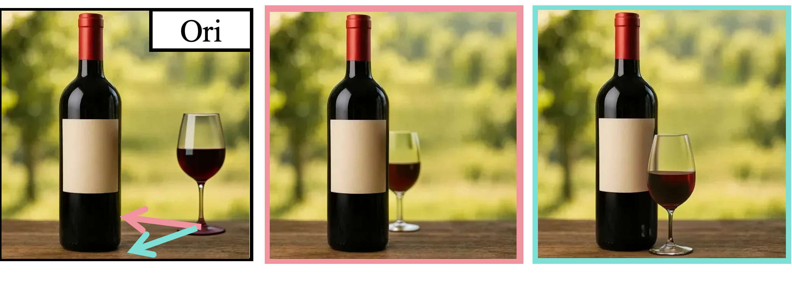
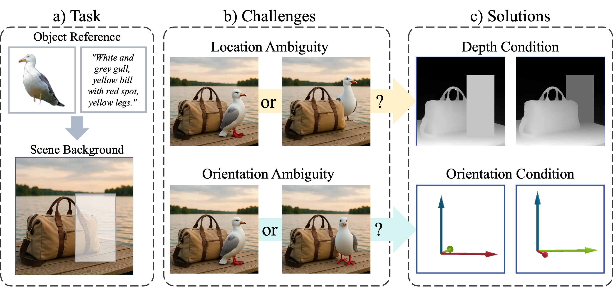
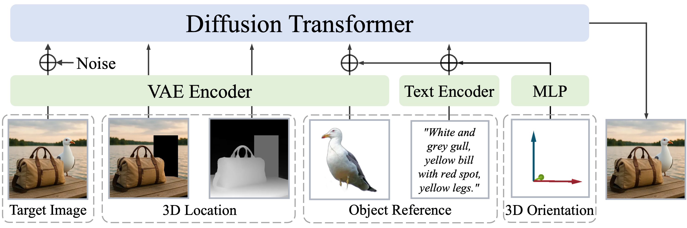
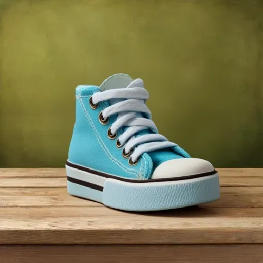
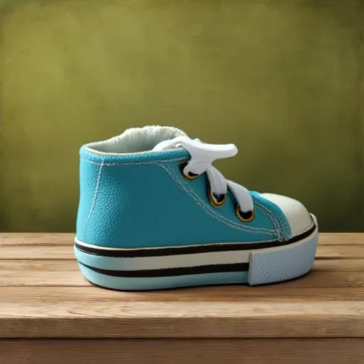
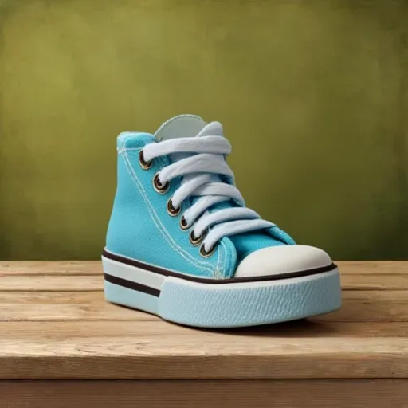
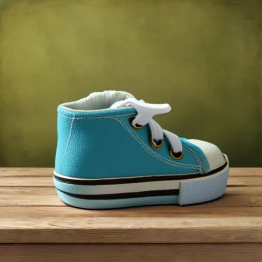
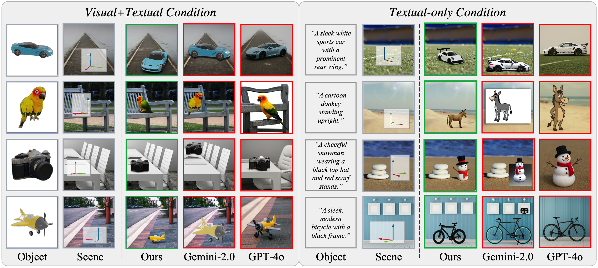

Precise Translation
Any specific position with any occlusion relation is supported.

We introduce SpatialHand, a novel framework for generative object insertion with precise 3D control. Current generative object manipulation methods primarily operate within the 2D image plane, but often fail to grasp 3D scene complexities, leading to ambiguities in an object's 3D position, orientation, and occlusion relations. SpatialHand addresses this by conceptualizing object insertion from a true "3D perspective," enabling manipulation with a complete 6 Degrees-of-Freedom (6DoF) controllability. Specifically, our solution naturally and implicitly encodes the 6DoF pose condition by decomposing it into 2D location (via masked image), depth (via composited depth map), and 3D orientation (embedded into latent features). To overcome the scarcity of paired training data, we develop an automated data construction pipeline using synthetic 3D assets, rendering, and subject-driven generation, complemented by visual foundation models for pose estimation. We further design a multi-stage training scheme to progressively drive SpatialHand to robustly follow multiple complex conditions. Extensive experiments reveal our approach's superiority over existing alternatives and its great potential for enabling more versatile and intuitive AR/VR-like object manipulation within images.
2D inpainting for object insertion/movement suffers from location ambiguity (in front of or behind existing elements?) and orientation ambiguity (facing right or left?). SpatialHand resolves these by adding extra depth and orientation conditions for spatially controlled object manipulation.
We focus on object insertion as our primary task due to its flexibility. SpatialHand decomposes the 6DoF object pose into 3D location (2D mask and depth map) and 3D orientation. These spatial conditions, along with free-view object reference images and text captions, are incorporated into the diffusion transformer's input tokens.
SpatialHand could insert the object to any specific position and orientation.Occlusion between objects and background is well handled while identity of the object is preserved.

SpatialHand could rotate the object to any specific angle while keeping the object's visible identity and fill in reasonable details in both background and previous unvisible regions of the object.
 



Any specific position with any occlusion relation is supported.
Extended to swap occlusion relation.
Qualitative comparison on 3D-aware object insertion. Red arrow indicates the desired orientation, and green arrow denotes the left side of the corresponding pose.
Qualitative comparison on 3D-aware object movement.